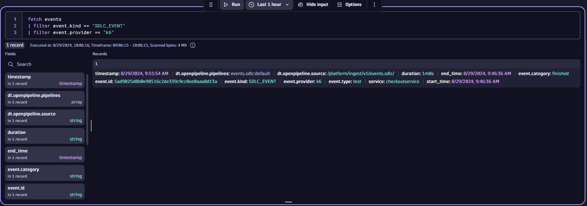
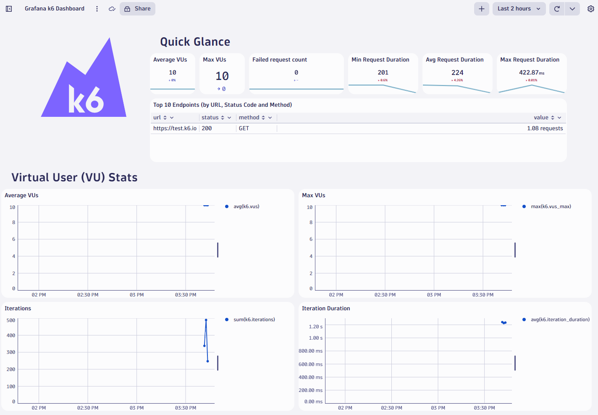

3. Run Demo
Run Demo#
Response will appear here...
Import Dynatrace Dashboard#
While you are waiting for the environment, add the dashboard to your Dynatrace environment.
- Save the k6 dashboard to your local machine.
- In Dynatrace, navigate to
Dashboardsand clickUpload - Upload the dashboard JSON file
Start k6#
In the codespace terminal, type docker ps and wait until Docker is running.
You should see this:
CONTAINER ID IMAGE COMMAND CREATED STATUS PORTS NAMES
docker ps
Now run k6 with the demo script. Copy and paste this as-is into the terminal window:
docker run \
-e K6_DYNATRACE_URL=$DT_URL \
-e K6_DYNATRACE_APITOKEN=$DT_K6_TOKEN \
--mount type=bind,source=/workspaces/$RepositoryName/k6scripts,target=/k6scripts hrexed/xk6-dynatrace-output:0.11 run /k6scripts/script.js \
-o output-dynatrace
Validate Metrics#
k6 streams metrics into Dynatrace so after about a minute, do the following to ensure metrics are reaching Dynatrace.
In Dynatrace:
- Press
ctrl + kand search fornotebooks - Create a new notebook and add a new
DQLsection - Type the following:
timeseries avg(k6) - Press
ctrl + =to bring up auto completion. You should see the list of ingest

View Events#
When the load test finished, the teardown function sends a Software Delivery Lifecycle Event (SDLC) to Dynatrace.
// Run load with 2 virtual users for 1 minute
export const options = {
vus: 2,
duration: '1m',
};
...
export function teardown() {
let post_params = {
headers: {
'Content-Type': 'application/json',
'Authorization': `Api-Token ${__ENV.K6_DYNATRACE_APITOKEN}`
},
};
// Send SDLC event at the end of the test
let payload = {
"event.provider": "k6",
"event.type": "test",
"event.category": "finished",
"service": "dummyservice",
"duration": options.duration
}
let res = http.post(`${__ENV.K6_DYNATRACE_URL}/platform/ingest/v1/events.sdlc`, JSON.stringify(payload), post_params);
}
Notice that the event contains metadata such as the provider and service which can be used for filtering in Dynatrace (see DQL below).
This event can be used as a trigger Dynatrace for workflows, synthetic tests, the site reliability guardian and more.
In Dynatrace:
- Press
ctrl + kand search fornotebooks - Open an existing notebook or create a new one
- Add a new
DQLsection and paste the following
fetch events
| filter event.kind == "SDLC_EVENT"
| filter event.provider == "k6"

User exercise: Modify the JSON body to also send the number of Virtual Users (VUs) used to Dynatrace. Re-run the load test to see the new event.
View Dashboard#
Open the prebuilt dashboard you previously uploaded.
Go to Dashboards (ctrl + k and search for Dashboards)
The dashboard will begin to be populated with data.

The demo is complete.